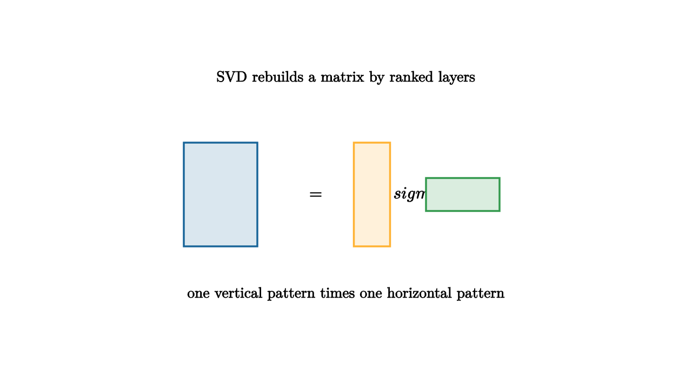

The singular value decomposition says that a matrix can be rebuilt from ranked channels. Each channel is an outer product, scaled by a singular value. Large singular values carry broad structure; small singular values often carry fine detail, noise, or rare effects. This is not an algorithm reserved for machine learning. It is a general tool for understanding tables, images, text counts, measurement systems, and networks.

source
let soft = |col, amount| lerp(WHITE, col, amount)
mesh blocks = [
center{1.35u} Text("SVD rebuilds a matrix by ranked layers", 0.62),
center{1.45l} fill{soft(BLUE, 0.16)} stroke{BLUE, 2} Rect([0.85, 1.2]),
center{0.35l} Text("=", 0.7),
center{0.3r} fill{soft(ORANGE, 0.18)} stroke{ORANGE, 2} Rect([0.42, 1.2]),
center{0.85r} Tex("\\sigma_1", 0.7),
center{1.35r} fill{soft(GREEN, 0.18)} stroke{GREEN, 2} Rect([0.85, 0.38]),
center{1.15d} Text("one vertical pattern times one horizontal pattern", 0.62)
]Think of an image as a matrix of brightness values. A rank-one layer paints the image with one column pattern multiplied by one row pattern. The first few layers usually capture large regions and broad gradients. More layers restore edges and texture. Keeping only the strongest layers compresses the image because the description stores a few vectors and numbers rather than every pixel.
The same logic helps with data tables. Suppose rows are cities and columns are measurements: rent, commute time, income, density, temperature, and so on. SVD finds orthogonal row patterns and column patterns that explain variance in ranked order. It gives a disciplined way to ask whether a large table is controlled by a small number of latent axes.
The compact formula is
The columns of $V$ describe input-side directions. The columns of $U$ describe output-side directions. The diagonal entries of $\Sigma$ describe how strongly each direction pair is connected. If the first singular value is much larger than the rest, the table has one dominant channel. If many singular values decay slowly, the table resists low-rank compression.
The best rank-$k$ approximation in squared-error sense keeps the first $k$ singular values and discards the rest. This is the Eckart-Young theorem. It turns a visual intuition into a guarantee: keeping the strongest channels gives the closest matrix of that rank.
source
let soft = |col, amount| lerp(WHITE, col, amount)
"Full Table"
mesh mat = [
center{1.35u} Text("full data table", 0.62),
center{0r} fill{soft(BLUE, 0.14)} stroke{BLUE, 2} Rect([2.0, 1.25]),
stroke{LIGHT_GRAY, 1.4} Line(0.5l + 0.65d, 0.5l + 0.65u),
stroke{LIGHT_GRAY, 1.4} Line(0r + 0.65d, 0r + 0.65u),
stroke{LIGHT_GRAY, 1.4} Line(0.5r + 0.65d, 0.5r + 0.65u)
]
play Fade(0.7)
"Rank One"
mat = [
center{1.35u} Text("first layer captures the largest pattern", 0.62),
center{0.75l} fill{soft(ORANGE, 0.2)} stroke{ORANGE, 2} Rect([0.42, 1.25]),
center{0r} Tex("\\times", 0.68),
center{0.75r} fill{soft(GREEN, 0.2)} stroke{GREEN, 2} Rect([1.25, 0.36])
]
play Trans(0.9)
"Add Detail"
mat = [
center{1.35u} Text("later layers refine, then mostly explain noise", 0.62),
center{1.05l} fill{soft(ORANGE, 0.2)} stroke{ORANGE, 2} Rect([0.36, 1.1]),
center{0r} fill{soft(BLUE, 0.16)} stroke{BLUE, 2} Rect([0.7, 0.8]),
center{1.05r} fill{soft(GREEN, 0.2)} stroke{GREEN, 2} Rect([1.0, 0.3])
]
play Trans(0.9)The danger is to treat the ordering as truth. A small singular value can matter if it represents a rare but important group. SVD gives a map of energy, not a moral ranking. The teacher's goal is to connect the computation to inspection: look at the singular values, inspect the leading vectors, and compare the low-rank reconstruction to the question you actually care about.
The lesson to keep: SVD is a microscope for structure in a matrix. It separates broad channels from fine channels, gives a principled low-rank approximation, and asks the analyst to decide which discarded variation is harmless and which variation carries meaning.